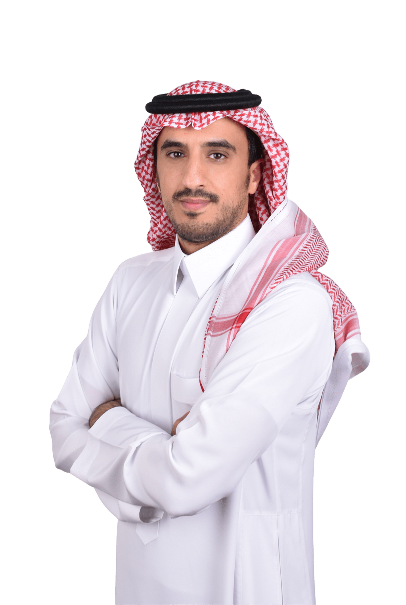

بين صرامة الميدان الهندسي، ودقة النص القانوني، وأدوات التفكير النقدي؛ رحلة مستمرة في الفهم والتحليل وصناعة القرار. لا أتعامل مع هذه الحقول كمسارات منفصلة، بل كمنظومة معرفية واحدة تربط الواقع التشغيلي بالإطار النظامي واختبار الحجة قبل بناء القرار.
«الهندسة تعلمني أن أفهم الواقع، والقانون أن أقرأ الإطار، والتفكير الاستدلالي أن أختبر الحجة.»
خمس سنوات وحتى الآن من التركيز على تحسين الكفاءة التشغيلية، وتقليص الهدر، وتطوير معايير قياس الأداء؛ مع توظيف منظور متكامل يربط المعطيات الفنية بالفهم النظامي والتعاقدي وأدوات التفكير النقدي.
نحو عقد من العمل الميداني المباشر في منصات الحفر، والتعامل الفوري مع التحديات التشغيلية والفنية في بيئات العمل عالية الدقة.